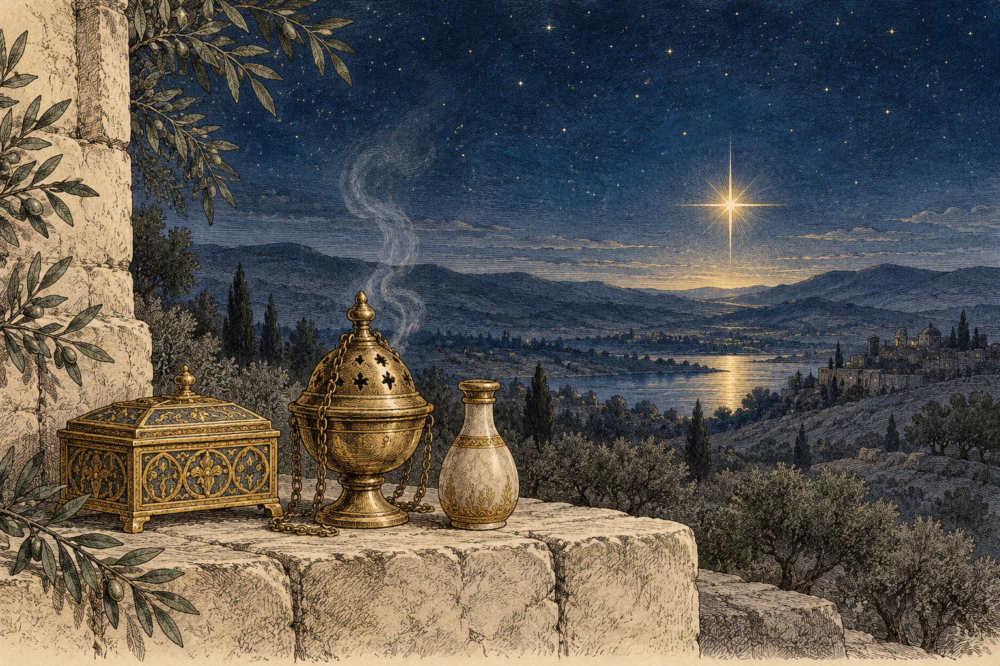
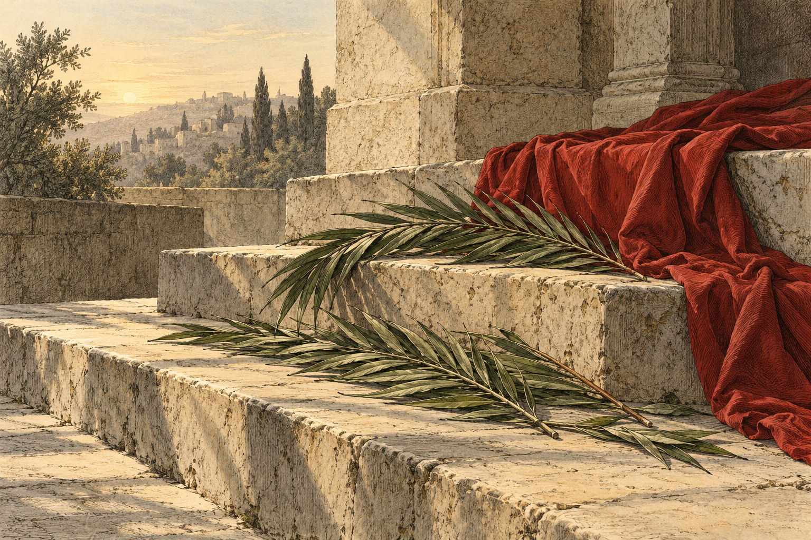
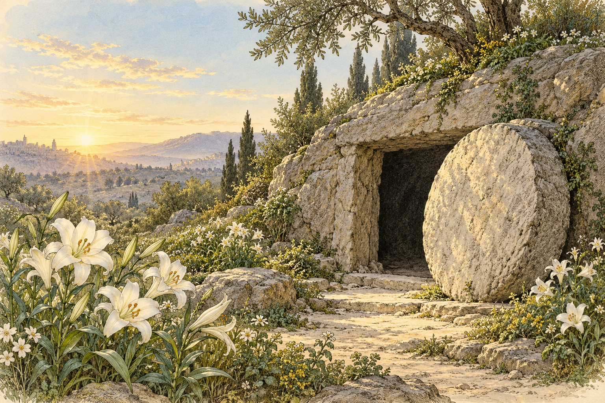
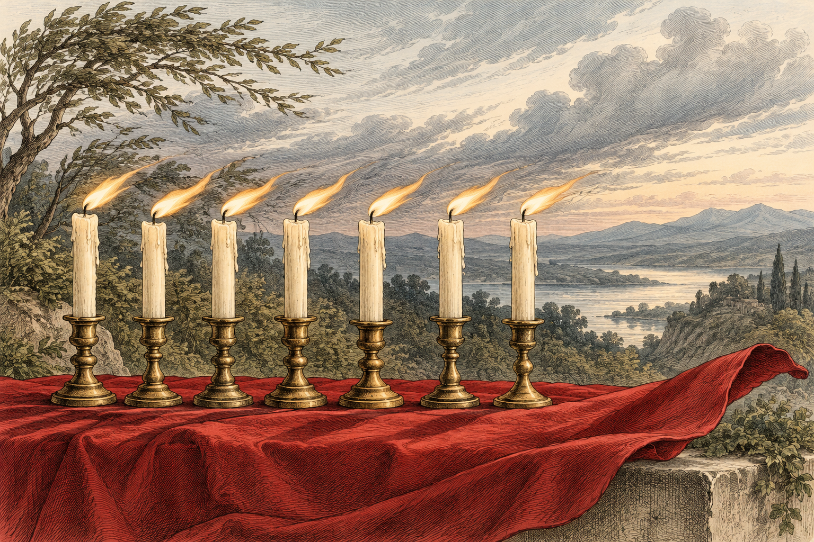
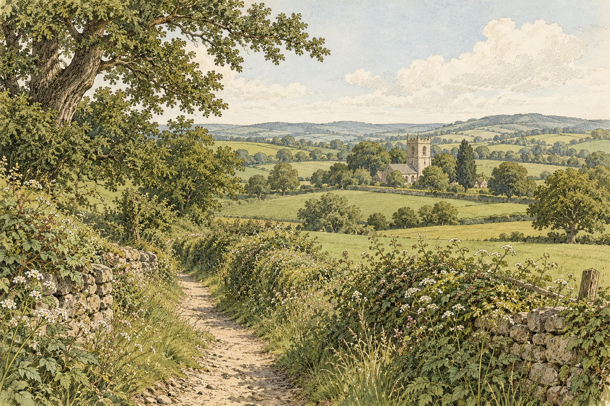

Image gallery
54 PNG design sources: the app icon, seasonal versions, custom glyphs, empty states, frames, and illustrated plates. Select an image to open its original PNG.
The design decision (D15) remains open. Icon Composer assembly, SVG tracing, and app integration follow in their build steps. These images were made with AI assistance from the project prompts; see the image registry for provenance.
A. App icon and layers

icon-app-light.pngPrompt
Create the artwork for an iOS app icon for a Book of Common Prayer app. Subject: a closed prayer book seen from the front, tilted about 8 degrees, filling about 60% of the canvas. Lamp-black leather cover (#1D1A17) with a thin gilt border line and a small, plain gilt Latin cross (#A3803A) on the upper half of the cover. One rubric-red ribbon marker (#A42A1E) with a swallow-tail end hangs from the bottom edge of the pages and curls gently. Solid warm ivory background (#F6F2E9). Square 1024×1024, full-bleed, no rounded corners, border, or drop shadow. Flat, simple shapes with crisp edges and at most a soft hint of shading; it must read clearly at 60 px. No text or letters, no logos or emblems, no compass rose.

icon-app-dark.pngPrompt
Recreate the attached app icon exactly (same book, cross, ribbon, angle, size, and composition) as its dark-mode version: background warm soot black (#13110E), book cover warm charcoal (#2A2622), border line and cross in bright gilt (#CFAE63), ribbon in warm vermilion (#E2765F). Square 1024×1024, full-bleed, no rounded corners, border, or drop shadow. Flat shapes, crisp edges. No text or letters, no logos or emblems.

icon-app-tinted.pngPrompt
Recreate the attached app icon as a single flat silhouette for iOS's tinted icon mode: the book and the ribbon in pure white (#FFFFFF), with the cross and the thin gap between the ribbon and the book cut out as transparent, all on a fully transparent background. Same composition, size, and position. Square 1024×1024. No shading, no outlines, no text.

icon-layer-book.pngPrompt
Recreate only the book from the attached app icon: the lamp-black cover (#1D1A17), its thin gilt border, and the gilt cross (#A3803A), at the same angle, size, and position on a square 1024×1024 canvas, on a fully transparent background. No ribbon, no background colour, no shadow, no text. Flat shapes, crisp edges.

icon-layer-ribbon.pngPrompt
Recreate only the red ribbon marker from the attached app icon, with the same shape, swallow-tail end, size, and position, on a square 1024×1024 canvas with a fully transparent background. Nothing else: no book, no shadow, no text. Flat colour #A42A1E, crisp edges.

icon-season-violet.pngPrompt
Recreate the attached app icon exactly, changing only the ribbon's colour to a deep liturgical violet (#5A3E7D). Keep the book, cross, background, angle, size, and composition identical. Square 1024×1024, full-bleed, no rounded corners or shadow. Flat shapes, crisp edges. No text or letters.

icon-season-white.pngPrompt
Recreate the attached app icon exactly, changing only the ribbon: make it a warm white silk ribbon (#EFE7D2) with a thin gilt edge (#A3803A) on both sides so it stands clearly apart from the ivory background. Keep the book, cross, background, angle, size, and composition identical. Square 1024×1024, full-bleed, no rounded corners or shadow. Flat shapes, crisp edges. No text or letters.

icon-season-green.pngPrompt
Recreate the attached app icon exactly, changing only the ribbon's colour to a deep liturgical green (#3E6A48). Keep the book, cross, background, angle, size, and composition identical. Square 1024×1024, full-bleed, no rounded corners or shadow. Flat shapes, crisp edges. No text or letters.

icon-season-rose.pngPrompt
Recreate the attached app icon exactly, changing only the ribbon's colour to a soft liturgical rose (#C68690). Keep the book, cross, background, angle, size, and composition identical. Square 1024×1024, full-bleed, no rounded corners or shadow. Flat shapes, crisp edges. No text or letters.

icon-season-blue.pngPrompt
Recreate the attached app icon exactly, changing only the ribbon's colour to a deep Sarum blue (#2E4A7A). Keep the book, cross, background, angle, size, and composition identical. Square 1024×1024, full-bleed, no rounded corners or shadow. Flat shapes, crisp edges. No text or letters.

icon-season-array.pngPrompt
Recreate the attached app icon exactly, changing only the ribbon: make it unbleached linen (#CDBFA2) with a hairline lamp-black edge (#1D1A17) so it stands apart from the ivory background, like the plain Lenten array of an English parish church. Keep the book, cross, background, angle, size, and composition identical. Square 1024×1024, full-bleed, no rounded corners or shadow. Flat shapes, crisp edges. No text or letters.

mark-small.pngPrompt
Simplify the attached app icon into a minimal mark for a website favicon and tiny interface sizes: a front-facing closed book in lamp-black (#1D1A17) with a small gilt cross (#A3803A) and one rubric-red ribbon (#A42A1E) hanging below it. Bold shapes, no border line, no fine detail; it must read at 16×16 px. Fully transparent background, square 1024×1024, centered with about 8% padding. No text or letters.
B. Custom symbols

symbol-atlas.pngPrompt
Draw one icon glyph in the style of Apple's SF Symbols, regular weight: even monoline strokes, rounded caps and joins, simple geometry, no shading or texture. Subject: an open book seen from above whose two pages carry three faint curved meridian lines and two curved parallel lines, like a map printed across the spread. Not a compass rose, no needle, no star. Pure black (#000000) on a transparent background, centered in a square 1024×1024 canvas with about 12% padding. No text or letters.

symbol-prayerbook.pngPrompt
Draw one icon glyph in the style of Apple's SF Symbols, regular weight: even monoline strokes, rounded caps and joins, simple geometry, no shading or texture. Subject: a closed book seen from the front with a small plain cross on its cover and a single ribbon marker with a swallow-tail end hanging from its bottom edge. Pure black (#000000) on a transparent background, centered in a square 1024×1024 canvas with about 12% padding. No text or letters.

symbol-ribbon.pngPrompt
Draw one icon glyph in the style of Apple's SF Symbols, regular weight: even monoline strokes, rounded caps and joins, simple geometry. Subject: a single bookmark ribbon hanging straight down with a swallow-tail (V-notched) end, drawn as a solid filled shape. Pure black (#000000) on a transparent background, centered in a square 1024×1024 canvas with about 12% padding. No text or letters.

symbol-compare.pngPrompt
Draw one icon glyph in the style of Apple's SF Symbols, regular weight: even monoline strokes, rounded caps and joins, simple geometry, no shading. Subject: two tall narrow pages side by side, each with five short horizontal lines of "text"; the third line on the left page is joined to the third line on the right page by a thin bridging line, suggesting the same passage compared in two books. Pure black (#000000) on a transparent background, centered in a square 1024×1024 canvas with about 12% padding. No letters.

symbol-lineage.pngPrompt
Draw one icon glyph in the style of Apple's SF Symbols, regular weight: even monoline strokes, rounded caps and joins, simple geometry, no shading. Subject: a small family tree of books: one closed book at the top joined by thin lines to two books below it, one of which is joined to two more books beneath. Pure black (#000000) on a transparent background, centered in a square 1024×1024 canvas with about 12% padding. No text or letters.

symbol-psalter.pngPrompt
Draw one icon glyph in the style of Apple's SF Symbols, regular weight: even monoline strokes, rounded caps and joins, simple geometry, no shading. Subject: a simple lyre-shaped harp with five strings, the traditional emblem of the Psalms of David. Pure black (#000000) on a transparent background, centered in a square 1024×1024 canvas with about 12% padding. No text or letters.

symbol-red-letter.pngPrompt
Draw one icon glyph in the style of Apple's SF Symbols, regular weight: crisp, simple geometry. Subject: a small cross pattée, whose four equal arms flare outward toward their ends, drawn as one solid filled shape. Pure black (#000000) on a transparent background, centered in a square 1024×1024 canvas with about 18% padding. No text or letters.

symbol-fast.pngPrompt
Draw one icon glyph in the style of Apple's SF Symbols, regular weight: even monoline strokes, rounded caps and joins, simple geometry, no shading. Subject: an empty shallow bowl seen from the side, resting on a short horizontal line. Pure black (#000000) on a transparent background, centered in a square 1024×1024 canvas with about 12% padding. No text or letters.

symbol-abstinence.pngPrompt
Draw one icon glyph in the style of Apple's SF Symbols, regular weight: even monoline strokes, rounded caps and joins, simple geometry, no shading. Subject: a simple fish in profile, drawn as the early Christian ichthys: two arcs that meet at the head and cross to form the tail. Pure black (#000000) on a transparent background, centered in a square 1024×1024 canvas with about 12% padding. No text or letters.

symbol-ember.pngPrompt
Draw one icon glyph in the style of Apple's SF Symbols, regular weight: even monoline strokes, rounded caps and joins, simple geometry, no shading. Subject: a Gothic quatrefoil, four equal rounded lobes arranged around a small center, standing for the four seasons of the year. Pure black (#000000) on a transparent background, centered in a square 1024×1024 canvas with about 12% padding. No text or letters.

symbol-rogation.pngPrompt
Draw one icon glyph in the style of Apple's SF Symbols, regular weight: even monoline strokes, rounded caps and joins, simple geometry, no shading. Subject: an upright sheaf of wheat bound with a cord around its middle, the ears fanning out at the top. Pure black (#000000) on a transparent background, centered in a square 1024×1024 canvas with about 12% padding. No text or letters.

symbol-vigil.pngPrompt
Draw one icon glyph in the style of Apple's SF Symbols, regular weight: even monoline strokes, rounded caps and joins, simple geometry, no shading. Subject: a single tall candle in a simple round holder with a small, still flame. Pure black (#000000) on a transparent background, centered in a square 1024×1024 canvas with about 12% padding. No text or letters.

symbol-intercessions.pngPrompt
Draw one icon glyph in the style of Apple's SF Symbols, regular weight: even monoline strokes, rounded caps and joins, simple geometry, no shading. Subject: two hands folded in prayer, seen from the side, fingers together and pointing upward. Hands only, no arms or figure. Pure black (#000000) on a transparent background, centered in a square 1024×1024 canvas with about 12% padding. No text or letters.

symbol-confession.pngPrompt
Draw one icon glyph in the style of Apple's SF Symbols, regular weight: even monoline strokes, rounded caps and joins, simple geometry, no shading. Subject: a single old-fashioned key with a round bow and a simple bit, set diagonally. Pure black (#000000) on a transparent background, centered in a square 1024×1024 canvas with about 12% padding. No text or letters.

symbol-litany.pngPrompt
Draw one icon glyph in the style of Apple's SF Symbols, regular weight: even monoline strokes, rounded caps and joins, simple geometry, no shading. Subject: a processional cross on a tall straight staff, the cross plain with slightly flared ends. Pure black (#000000) on a transparent background, centered in a square 1024×1024 canvas with about 12% padding. No text or letters.

symbol-plan.pngPrompt
Draw one icon glyph in the style of Apple's SF Symbols, regular weight: even monoline strokes, rounded caps and joins, simple geometry, no shading. Subject: an open book seen from above with a ribbon marker laid across the right-hand page, keeping a place. Pure black (#000000) on a transparent background, centered in a square 1024×1024 canvas with about 12% padding. No text or letters.
C. Empty states

empty-favorites.pngPrompt
Fine engraved line art in the manner of a 19th-century prayer book illustration: pure black (#000000) lines with light cross-hatching and no colour fills, on a fully transparent background. Subject: a single loose bookmark ribbon with a swallow-tail end, lying in a gentle S-curve on an otherwise empty surface. Quiet, warm, still, with generous empty space. Square 1024×1024. No text or lettering, no people, no logos or emblems.

empty-intercessions.pngPrompt
Fine engraved line art in the manner of a 19th-century prayer book illustration: pure black (#000000) lines with light cross-hatching and no colour fills, on a fully transparent background. Subject: a small blank card propped against a closed book, with a pencil lying beside it. Quiet, warm, still, with generous empty space. Square 1024×1024. No text or lettering, no people, no logos or emblems.

empty-journal.pngPrompt
Fine engraved line art in the manner of a 19th-century prayer book illustration: pure black (#000000) lines with light cross-hatching and no colour fills, on a fully transparent background. Subject: a closed notebook with a ribbon marker and a fountain pen resting diagonally across its cover. Quiet, warm, still, with generous empty space. Square 1024×1024. No text or lettering, no people, no logos or emblems.

empty-search.pngPrompt
Fine engraved line art in the manner of a 19th-century prayer book illustration: pure black (#000000) lines with light cross-hatching and no colour fills, on a fully transparent background. Subject: a round magnifying glass resting on an open book whose pages show only faint, unreadable lines. Quiet, warm, still, with generous empty space. Square 1024×1024. No text or lettering, no people, no logos or emblems.

empty-plan.pngPrompt
Fine engraved line art in the manner of a 19th-century prayer book illustration: pure black (#000000) lines with light cross-hatching and no colour fills, on a fully transparent background. Subject: a closed book lying flat, its ribbon marker laid neatly along the cover. Quiet, warm, restful, with generous empty space. Square 1024×1024. No text or lettering, no people, no logos or emblems.

empty-not-in-book.pngPrompt
Fine engraved line art in the manner of a 19th-century prayer book illustration: pure black (#000000) lines with light cross-hatching and no colour fills, on a fully transparent background. Subject: two closed books standing upright side by side on a shelf, with a narrow empty gap between them where a third book would stand. Quiet, warm, still, with generous empty space. Square 1024×1024. No text or lettering on the spines, no people, no logos or emblems.

empty-error.pngPrompt
Fine engraved line art in the manner of a 19th-century prayer book illustration: pure black (#000000) lines with light cross-hatching and no colour fills, on a fully transparent background. Subject: a single loose page, gently curled at one corner, resting at a slight angle. Calm rather than alarming, with generous empty space. Square 1024×1024. No text or lettering, no people, no logos or emblems.
D. Ornaments and frames

ornament-divider.pngPrompt
Fine engraved ornament in the manner of a 19th-century prayer book: pure black (#000000) lines, no fills or shading, on a fully transparent background. Subject: a horizontal ornamental rule running the full width of the canvas at its vertical center: one fine hairline with a small central fleuron (a simple four-petal flower) and a tiny dot on each side of it. Nothing else on the canvas. Landscape 1536×1024. No text or letters, no emblems.

ornament-corner.pngPrompt
Fine engraved ornament in the manner of a 19th-century prayer book: pure black (#000000) lines, no fills or shading, on a fully transparent background. Subject: a single corner ornament for the top-left corner of a frame: two fine parallel rules meeting at a right angle, with a small leaf-scroll flourish where they meet. The ornament sits in the top-left quarter of the canvas; the rest is empty. Square 1024×1024. No text or letters, no emblems.

frame-atlas-plate.pngPrompt
Fine engraved ornament in the manner of an antique atlas plate: pure black (#000000) lines, no fills or shading, on a fully transparent background. Subject: a rectangular double-rule border near the edges of the canvas, with a narrow band of alternating black and white segments (like an old map's degree scale) between the two rules and a small square block with a simple four-petal flower at each corner. The whole interior is completely empty. Landscape 1536×1024. No text, numbers, or letters; no compass rose, no emblems.

frame-cartouche.pngPrompt
Fine engraved ornament in the manner of the title cartouche on an antique map: pure black (#000000) lines with light hatching, no colour, on a fully transparent background. Subject: an empty horizontal oval panel framed by scrolled strapwork and small leafy flourishes, centered on the canvas; the panel's interior completely blank. Landscape 1536×1024. No text or letters, no figures or faces, no emblems, no compass rose.

frame-share-square.pngPrompt
Fine engraved ornament in the manner of a 19th-century prayer book: pure black (#000000) lines, no fills or shading, on a fully transparent background. Subject: a delicate rectangular frame for a quotation card: one fine outer rule and one inner hairline close to it, with a small four-petal fleuron at each of the four corners. The interior is completely empty and fills about 80% of the canvas. Square 1024×1024. No text or letters, no emblems.

frame-share-portrait.pngPrompt
Fine engraved ornament in the manner of a 19th-century prayer book: pure black (#000000) lines, no fills or shading, on a fully transparent background. Subject: a delicate rectangular frame for a tall quotation card: one fine outer rule and one inner hairline close to it, with a small four-petal fleuron at each of the four corners. The interior is completely empty and fills about 80% of the canvas. Portrait 1024×1536. No text or letters, no emblems.

background-graticule.pngPrompt
A very faint graticule like the curved grid on an antique world map projection: evenly spaced thin meridians and parallels, gently curved, in pure black (#000000) on a fully transparent background, filling the canvas edge to edge. No land, coastlines, labels, numbers, compass rose, or decoration; just the grid, for use at low opacity behind a diagram. Landscape 1536×1024.
E. Illustrated plates and website

plate-welcome.pngPrompt
Fine engraved line illustration with a soft ink wash, like a hand-coloured plate in a 19th-century prayer book: lamp-black linework (#1D1A17) on warm ivory paper (#F6F2E9), colour muted and sparing, gilt (#A3803A) only as thin lines. Subject: an open prayer book resting on a wooden lectern, with three ribbon markers (red, green, and violet) hanging from its pages; soft morning light from a window to the left; an unlit brass candlestick behind it against a plain plastered wall. Quiet, warm, still, reverent, with generous empty space. Landscape 1536×1024. No text or lettering on the pages, no people, no logos or emblems.

web-hero.pngPrompt
Fine engraved line illustration with a soft ink wash, like a hand-coloured plate in a 19th-century prayer book or atlas: lamp-black linework (#1D1A17) on warm ivory paper (#F6F2E9), colour muted and sparing, gilt (#A3803A) only as thin lines. Subject: a still life on a wooden table: an open prayer book with a red ribbon (#A42A1E), a small closed black prayer book beside it, and an old folded map lying partly open beneath them, its surface showing only faint lines with no place names; warm evening lamplight from the right. Quiet, warm, still. Landscape 1536×1024. No text or lettering anywhere, no people, no logos, emblems, or compass rose.

web-og.pngPrompt
Fine engraved line illustration with a soft ink wash, like a plate in a 19th-century prayer book: lamp-black linework (#1D1A17) on warm ivory paper (#F6F2E9). Subject: the closed black prayer book with the gilt cross and red ribbon from the attached app icon, redrawn as an engraved illustration, standing in the left third of the canvas. The right two-thirds is plain ivory and completely empty, reserved for a title added later. Landscape 1536×1024. No text or lettering anywhere, no people, no logos or emblems.

web-404.pngPrompt
Fine engraved line art in the manner of a 19th-century prayer book illustration: pure black (#000000) lines with light cross-hatching and no colour fills, on a fully transparent background. Subject: an open book with blank pages and a ribbon marker lying loosely across them, as if the place has been lost. Gentle, a little wry, with generous empty space. Square 1024×1024. No text or lettering, no people, no logos or emblems.

plate-advent.pngPrompt
Fine engraved line illustration with a soft ink wash, like a hand-coloured plate in a 19th-century prayer book: lamp-black linework (#1D1A17) on warm ivory paper (#F6F2E9), colour muted and sparing. Subject: an evergreen Advent wreath on a dark wooden table holding three violet candles (#5A3E7D) and one rose candle (#C68690), with one violet candle lit, early winter dusk at a window behind. Quiet, expectant, still. Landscape 1536×1024. No text or lettering, no people, no logos or emblems.

plate-christmas.pngPrompt
Fine engraved line illustration with a soft ink wash, like a hand-coloured plate in a 19th-century prayer book: lamp-black linework (#1D1A17) on warm ivory paper (#F6F2E9), colour muted and sparing, gilt (#A3803A) only as thin lines. Subject: a single lit white candle on a deep windowsill with sprigs of holly and red berries, snow falling faintly beyond the glass at night. Quiet, warm, joyful, still. Landscape 1536×1024. No text or lettering, no people, no logos or emblems.


plate-epiphany.pngPrompt
Fine engraved line illustration with a soft ink wash, like a hand-coloured plate in a 19th-century prayer book: lamp-black linework (#1D1A17) on warm ivory paper (#F6F2E9), colour muted and sparing, gilt (#A3803A) only as thin lines. Subject: one bright star low over a deep blue night horizon of hills; in the foreground, on a stone ledge, three small gifts: a gilt casket, a brass censer, and a small flask. Quiet, luminous, still. Landscape 1536×1024. No text or lettering, no people or figures, no logos or emblems.

plate-lent.pngPrompt
Fine engraved line illustration with a soft ink wash, like a hand-coloured plate in a 19th-century prayer book: lamp-black linework (#1D1A17) on warm ivory paper (#F6F2E9), colour muted and sparing. Subject: a bare thorn branch laid across a folded violet cloth (#5A3E7D), beside a small earthenware bowl of grey ashes, on a plain wooden table in cool morning light. Sober, quiet, still. Landscape 1536×1024. No text or lettering, no people, no logos or emblems.


plate-holy-week.pngPrompt
Fine engraved line illustration with a soft ink wash, like a hand-coloured plate in a 19th-century prayer book: lamp-black linework (#1D1A17) on warm ivory paper (#F6F2E9), colour muted and sparing. Subject: green palm fronds laid on worn stone steps, a deep red cloth (#9C2B2C) draped over the top step, low early light casting long shadows. Solemn, quiet, still. Landscape 1536×1024. No text or lettering, no people or figures, no logos or emblems.


plate-easter.pngPrompt
Fine engraved line illustration with a soft ink wash, like a hand-coloured plate in a 19th-century prayer book: lamp-black linework (#1D1A17) on warm ivory paper (#F6F2E9), colour muted and sparing, gilt (#A3803A) only as thin lines. Subject: white lilies growing in a garden beside a large round stone rolled away from a dark rock-cut doorway, the sky brightening at dawn. Joyful, quiet, luminous. Landscape 1536×1024. No text or lettering, no people, figures, or angels, no logos or emblems.


plate-pentecost.pngPrompt
Fine engraved line illustration with a soft ink wash, like a hand-coloured plate in a 19th-century prayer book: lamp-black linework (#1D1A17) on warm ivory paper (#F6F2E9), colour muted and sparing. Subject: seven lit candles in a row whose flames all lean the same way as if in a rushing wind, standing on a deep red cloth (#9C2B2C) that lifts at its edge in the same wind. Bright, quiet, alive. Landscape 1536×1024. No text or lettering, no people, no birds, no logos or emblems.


plate-trinity.pngPrompt
Fine engraved line illustration with a soft ink wash, like a hand-coloured plate in a 19th-century prayer book: lamp-black linework (#1D1A17) on warm ivory paper (#F6F2E9), colour muted and sparing, greens leaning toward #3E6A48. Subject: a summer footpath through green fields and hedgerows leading toward the small stone tower of a distant country parish church. Peaceful, ordinary, still. Landscape 1536×1024. No text or lettering, no people, no signs, no flags, no logos or emblems.